GAG2
Tier List
Grow a Garden 2 Gear Tier List
Gear in Grow a Garden 2 ranges from basic watering cans to legendary teleporters and super sprinklers. This tier list ranks every gear item based on its utility, rarity, and overall impact on your farming efficiency. Use this guide to invest in the best tools for your garden.
📅 Updated: June 16, 2026
All Gear
Browse every gear item in Grow a Garden 2. Click any card for detailed stats and notes.
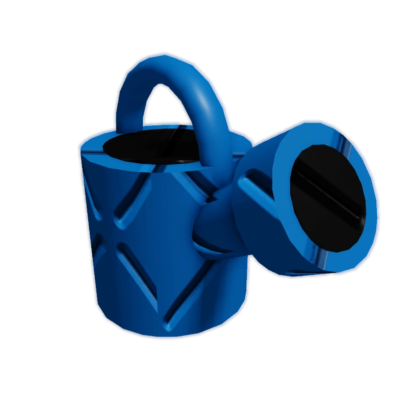
Common Watering Can
Common Gear Shop 2K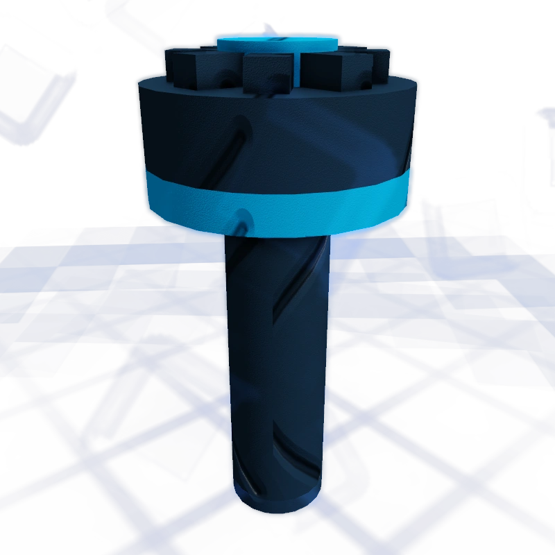
Common Sprinkler
Common Gear ShopSign
Common Gear Shop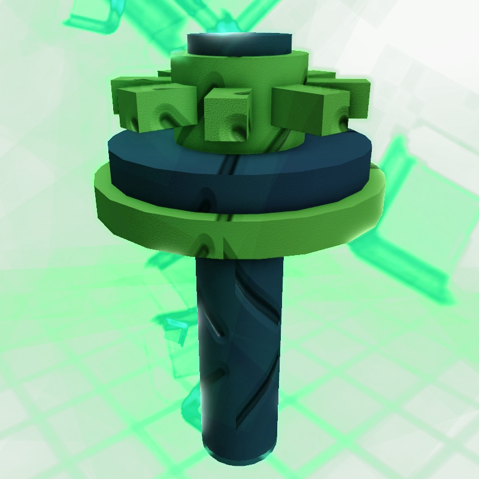
Uncommon Sprinkler
Uncommon Gear Shop 10K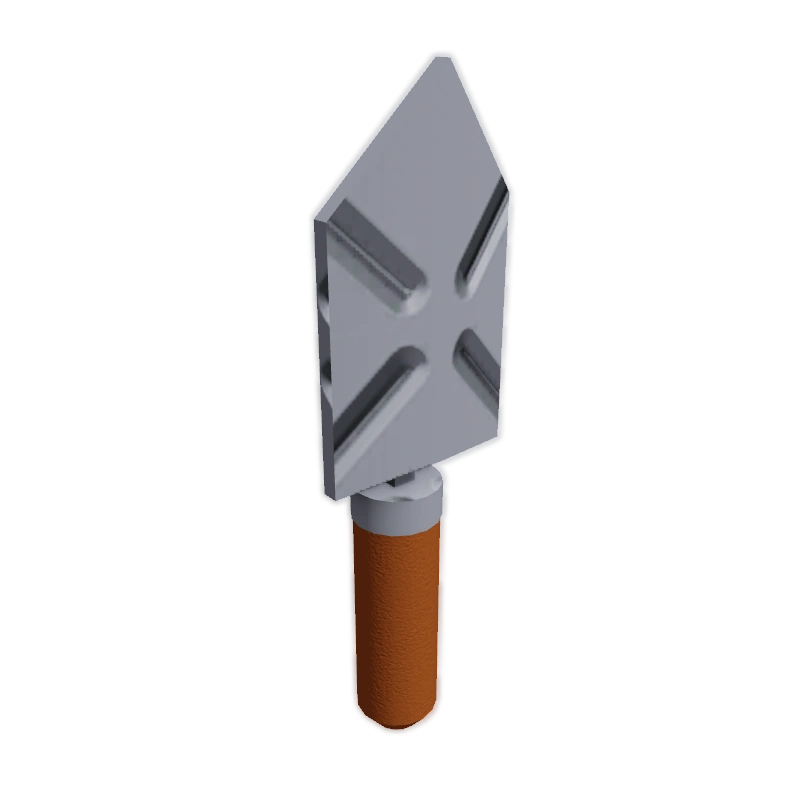
Trowel
Rare Gear Shop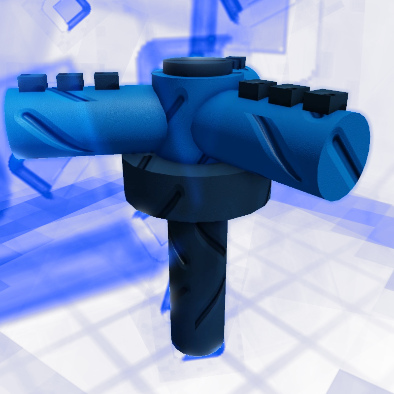
Rare Sprinkler
Rare Gear Shop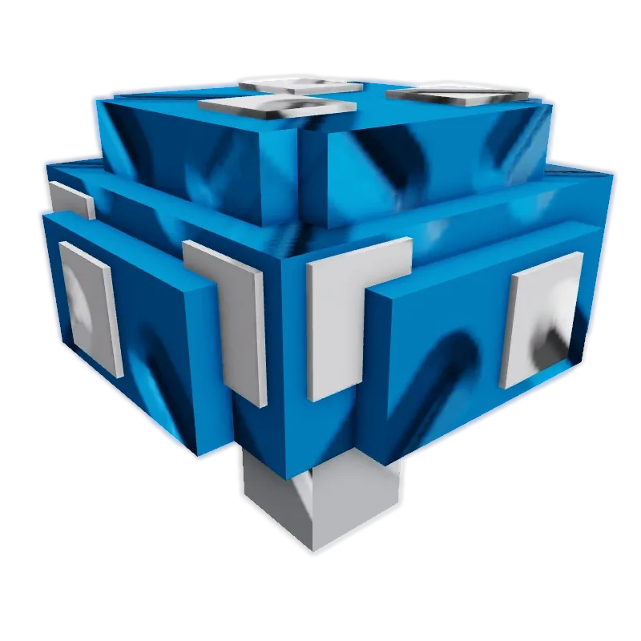
Jump Mushroom
Rare Gear Shop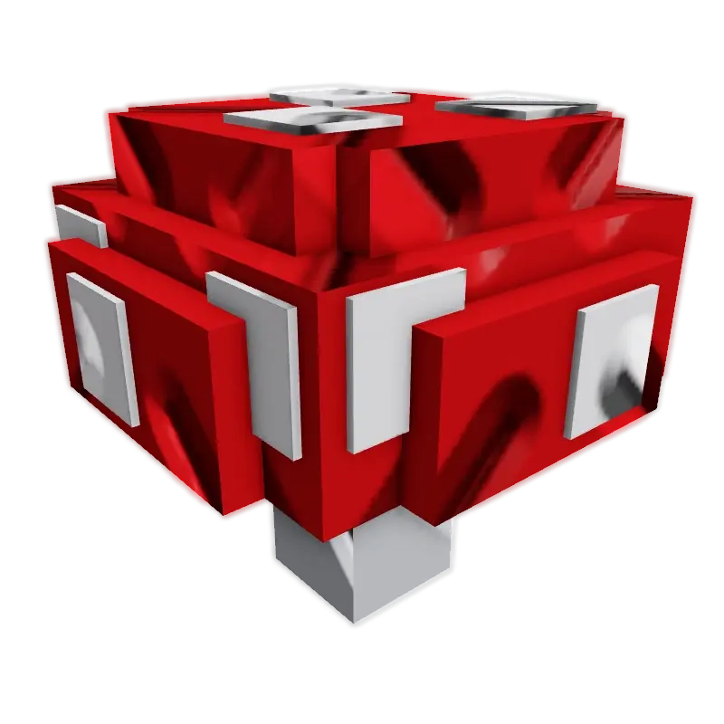
Speed Mushroom
Rare Gear Shop 1.5K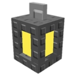
Lantern
Rare Gear Shop 12K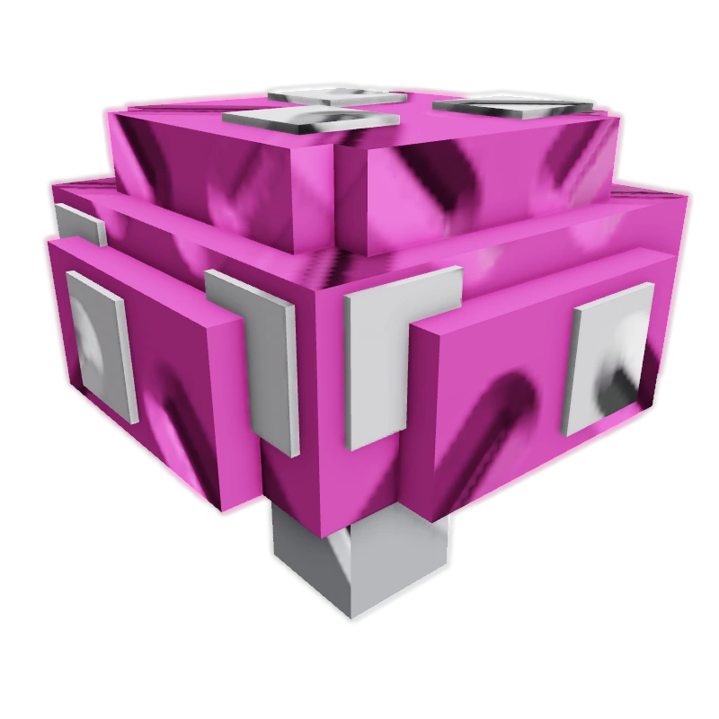
Shrink Mushroom
Epic Gear Shop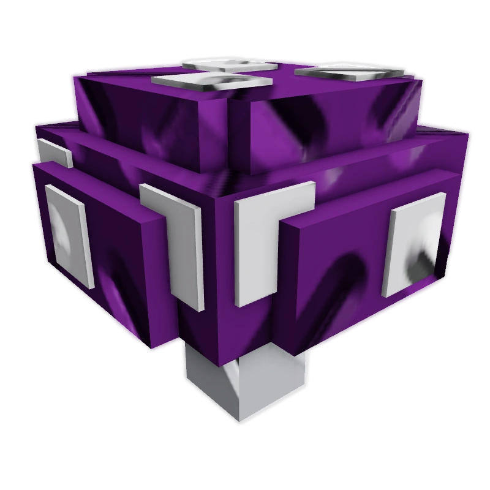
Supersize Mushroom
Epic Gear Shop
Gnome
Epic Gear Shop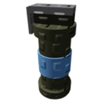
Flashbang
Epic Gear Shop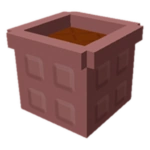
Basic Pot
Epic Gear Shop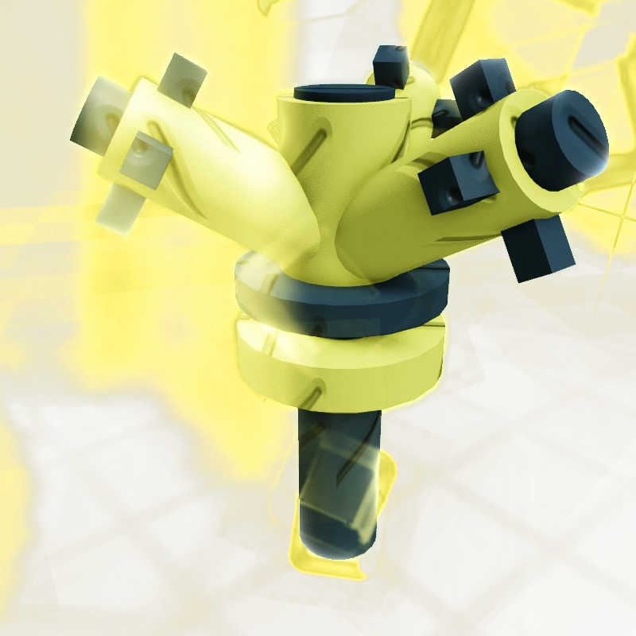
Legendary Sprinkler
Legendary Gear Shop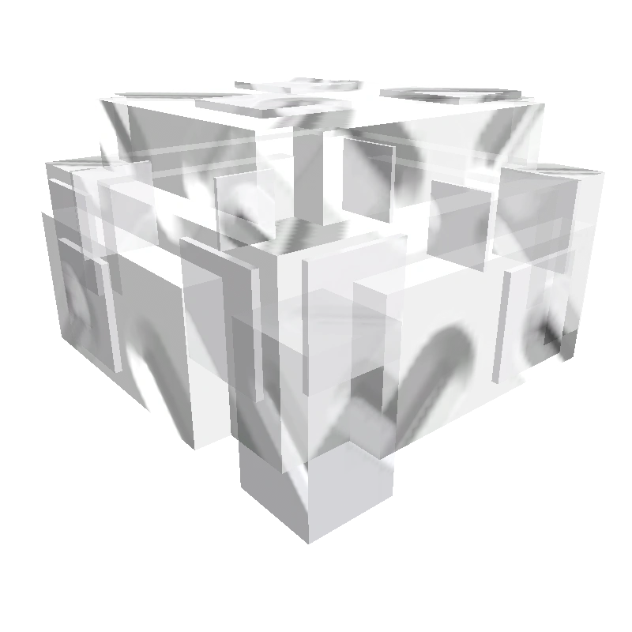
Invisibility Mushroom
Legendary Gear Shop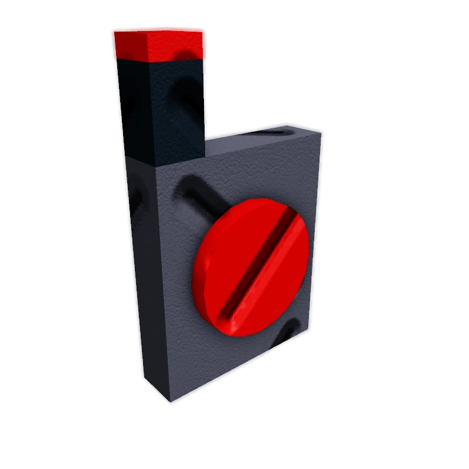
Teleporter
Legendary Gear Shop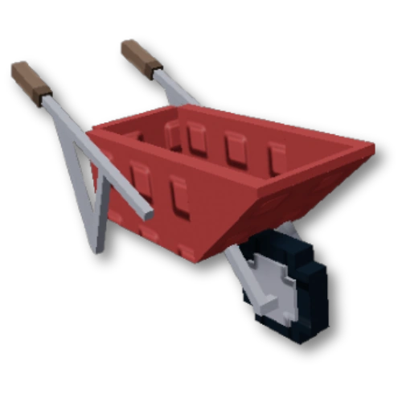
Wheelbarrow
Legendary Gear Shop 500K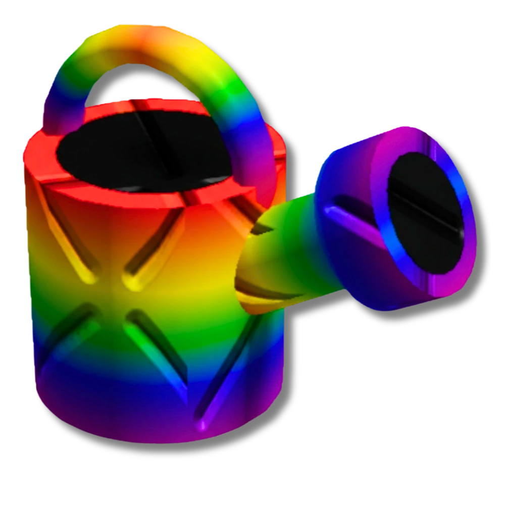
Super Watering Can
Super Gear Shop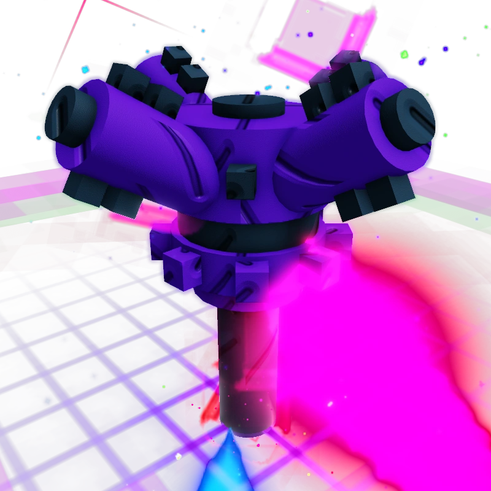
Super Sprinkler
Super Gear ShopGrow a Garden 2 Gear Tier List: Overview
Gears can be categorized into several tiers based on their effectiveness, rarity, and cost. The S-Tier holds the absolute best items that can drastically boost your profits and defense, while lower tiers are useful for early‑game or specific situations.
| Tier | Gear |
|---|---|
| S Tier | Super Sprinkler, Super Watering Can, Legendary Sprinkler, Teleporter, Wheelbarrow, Gnome |
| A Tier | Rare Sprinkler, Uncommon Sprinkler, Trowel, Lantern, Speed Mushroom, Jump Mushroom, Shrink Mushroom, Supersize Mushroom, Basic Pot, Invisibility Mushroom, Flashbang |
| B Tier | Common Sprinkler, Common Watering Can, Sign |
S-Tier gears offer game‑changing bonuses, while A‑Tier items are very good and B‑Tier are basic but still useful.
Gear Tier List Explained
🌟 S-Tier Gear
These are the most powerful gears in the game. They provide massive growth boosts, max size luck, teleportation, carrying ability, and strong defenses. Investing in these will greatly accelerate your progress.
| Gear | Rarity | Effect | Price |
|---|---|---|---|
| Super Sprinkler | Super | 5x growth, +100 size luck, 55-stud radius, 2 min | Not confirmed |
| Super Watering Can | Super | 300 growth stat, 15s, 8-stud radius, clears decay | Not confirmed |
| Legendary Sprinkler | Legendary | 4x growth, +65 size luck, 40-stud radius, 2 min | Not confirmed |
| Teleporter | Legendary | Allows you to teleport anywhere | Not confirmed |
| Wheelbarrow | Legendary | Lets you carry a friend | 500K |
| Gnome | Epic | Steals sheckles and damages intruders | Not confirmed |
⭐ A-Tier Gear
A‑Tier gears are excellent and can significantly improve your farming efficiency. They include strong sprinklers, useful tools, and various mushrooms that provide useful temporary boosts.
| Gear | Rarity | Effect | Price |
|---|---|---|---|
| Rare Sprinkler | Rare | 3x growth, +40 size luck, 30-stud radius, 2 min | Not confirmed |
| Uncommon Sprinkler | Uncommon | 2x growth, +21 size luck, 25-stud radius, 2 min | 10K |
| Trowel | Rare | Moves planted crops to another spot | Not confirmed |
| Lantern | Rare | See farther at night (one-time purchase) | 12K |
| Speed Mushroom | Rare | +5 speed for 1 minute | 1.5K |
| Jump Mushroom | Rare | Temporary jump boost | Not confirmed |
| Shrink Mushroom | Epic | 0.75x size for 45 seconds | Not confirmed |
| Supersize Mushroom | Epic | Temporarily makes you giant | Not confirmed |
| Basic Pot | Epic | Blocks players from getting your fruits | Not confirmed |
| Invisibility Mushroom | Legendary | Temporarily invisible | Not confirmed |
| Flashbang | Epic | Exact effect unknown – needs testing | Not confirmed |
🟢 B-Tier Gear
Basic but still useful gears for early game. They are affordable and help you get started with watering, sprinkling, and communication.
| Gear | Rarity | Effect | Price |
|---|---|---|---|
| Common Sprinkler | Common | 1.5x growth, +7 size luck, 20-stud radius, 2 min | Not confirmed |
| Common Watering Can | Common | 3x growth for 10s, 5-stud radius, clears decay | 2K |
| Sign | Common | Lets you write messages, already owned | N/A |
Frequently Asked Questions
What is the best gear in Grow a Garden 2?
The best gears are Super Sprinkler and Super Watering Can. Super Sprinkler provides 5x growth speed and +100 size luck, while Super Watering Can gives a massive 300 growth-speed stat for 15 seconds. Legendary Sprinkler and Teleporter are also top‑tier.
How do I get sprinklers in Grow a Garden 2?
Sprinklers can be bought from the Gear Shop when they appear. They come in Common, Uncommon, Rare, Legendary, and Super rarities. Higher rarity sprinklers provide better growth speed and size luck bonuses.
What does size luck do in Grow a Garden 2?
Size luck improves the chance of getting rare weight‑doubling rolls on crops. Sprinklers provide size luck bonuses, and the total size luck caps at 100. Super Sprinkler alone reaches the cap.
What are the best defensive gears?
Gnome and Basic Pot are excellent for defense. Gnome steals sheckles and damages intruders, while Basic Pot blocks other players from taking your fruits. Both are Epic rarity.
All gear pages are actively maintained with latest stats and price updates.
Missing a gear? Contact us via Discord or the contact form.